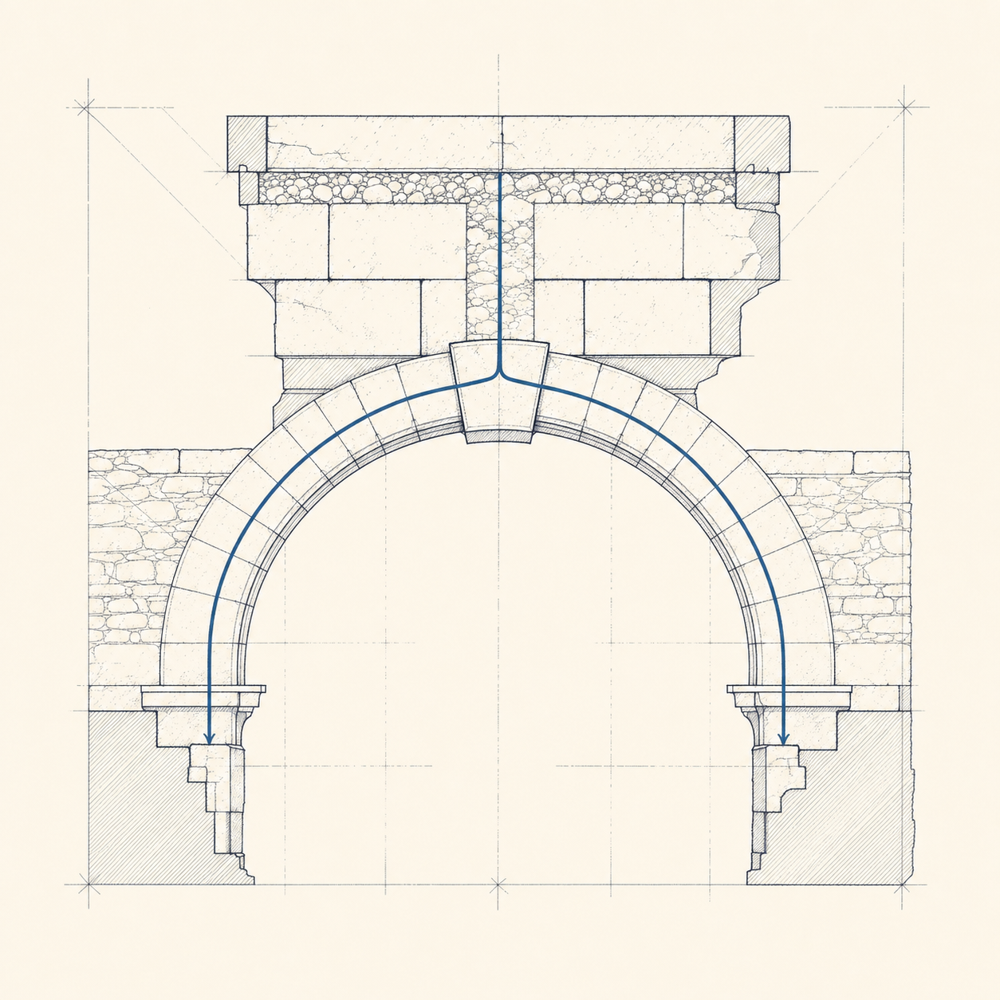

Architecture
Built In, Not Bolted On: Constraint-Native Architecture as a Design Stance
Constraints, safety, and provenance are load-bearing structure, not paperwork bolted on after launch. A design stance for building AI systems that cannot be configured into failure.